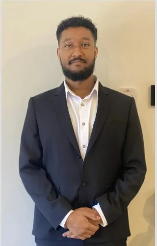

About
AboutIssey Siele
Mechanical Engineering (Honours) and Computer Science at Griffith University. Based in Brisbane, working on the Gold Coast.

About me
Mechanical engineering and computer science student
I am a final-year Mechanical Engineering (Honours) and Computer Science student at Griffith University, graduating in July 2027. Before engineering I completed a Bachelor of Aviation at Griffith, conferred in 2021, and I also did flight training at Archerfield. I ended up in engineering because I enjoy understanding how things work, breaking problems down, and finding practical ways to improve systems. Over time, that interest has grown into a stronger focus on design, modelling, and solving real engineering problems in a structured way.
Industry roles have run alongside my studies since 2024. From August 2024 to July 2026 I designed replacement parts for souvenir penny press machines and serviced them at tourism venues as an independent contractor. As a mechanical engineering intern at the Australian Centre for Precision Health and Technology, I carried out the kinematic analysis of an upper-limb retrofit for a rehabilitation ergometer, comparing eight configurations across three user sizes. Since July 2026 I have been a construction cadet with Binah on a residential development on the Gold Coast, supporting estimating, project delivery and site engineering, chairing the weekly project meeting, and building the construction programme in MS Project.
What motivates me most is the chance to apply technical thinking to work that has a clear purpose. I enjoy analysing a problem, testing ideas, and improving a design rather than learning theory without context. I value persistence, problem-solving, and being able to contribute meaningfully to a team. Right now, I am looking for opportunities that keep building real industry experience and strengthen my technical skills. In the long term, I want to become an engineer who is adaptable, capable, and trusted to contribute to challenging and worthwhile projects.
- Degree
- B.Eng (Hons) / B.CompSci, Griffith University
- Majors
- Mechanical Engineering; Data Science and Artificial Intelligence
- Graduating
- July 2027
- Earlier degree
- Bachelor of Aviation, Griffith University, 2021
- Work rights
- Australian citizen
- Based in
- Brisbane, QLD. Driver’s licence
- Languages
- English (fluent), Tigrigna (native)
Education
Griffith University
Aviation first, then a double degree in engineering and computer science, now in its final year.
Bachelor of Engineering (Honours) / Bachelor of Computer Science
- MajorsMechanical Engineering; Data Science and AI
- StartedTrimester 2, 2021
- Griffith Award for Academic Excellence2023
- Expected completionJuly 2027
Relevant coursework
In progress: Control Systems, Electromechanics, Design of Machine Elements and Intelligent Systems.
Bachelor of Aviation
- Studied2015 to 2021
- ConferredMay 2021
Courses included aerodynamics, navigation and navigational systems, aviation meteorology, human factors, safety management and aviation law. I also did flight training at Archerfield through the Pathfinder Pilot Certificate program.
Capabilities
Skills and tools
Each capability links to the work that shows it.
| Capability | What I have done | Tools | See it |
|---|---|---|---|
| Mechanism kinematics | Motion studies of eight retrofit configurations, transmission-angle checks, two-link inverse kinematics and a reach screen for three user sizes | SolidWorks Motion, Excel, PMKS+ | RT300 |
| CAD and drawings | A simulation-ready assembly rebuilt from a supplied STEP file, eleven versions of the analysis model, and replacement parts with manufacturing drawings for field repairs | SolidWorks | RT300, Penny press |
| Field service | Site surveys, installation and fault diagnosis on penny press and medallion machines at six venues | Hand tools, Nayax payment terminals | Penny press |
| Construction delivery | Consolidated programme, ITP registers, chase lists, trade schedules and weekly meeting minutes | MS Project, Procore, HammerTech, Bluebeam, Excel and VBA | Experience |
| Controls and simulation | A nonlinear attitude simulation with PID and LQR pointing, safe-mode logic with hysteresis, and Monte Carlo checks against written requirements | MATLAB | Spacecraft |
| Data and programming | Post-processing of motion-study exports in Excel; the poster heatmap and thesis polar plots in Python; for coursework, a first-order logic prover, extensions to the course’s starter Isabelle prover and a group web app | Excel, Python (NumPy, Pandas, Matplotlib, Flask), Java, SQL, MATLAB | RT300, Coursework |
| Making | Mechanical assembly and repair in the field | Hand tools | Penny press |
| Workshop | Machining and welding in the Manufacturing Technology and Materials workshops; 3D printing for prototyping | Lathe, milling machine, welding equipment, 3D printer | Coursework |
| Writing and presenting | Thesis, A1 poster and progress presentations; an illustrated troubleshooting guide | LaTeX, Word, PowerPoint | RT300, Penny press |
Site readiness
Tickets and clearances
Current as of September 2026.
- Construction induction (White Card), CPCWHS1001Jul 2026
- Provide First Aid (HLTAID011) and CPR (HLTAID009)Jul 2026
- NDIS Worker Screening CheckCurrent
- Driver’s licenceCurrent
- Australian citizenFull work rights